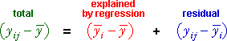
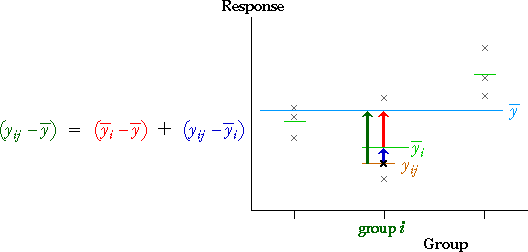
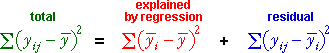
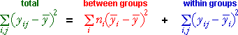

Are the group means equal?
The model that allows for different means in g groups is:

In this model, testing for equal group means is equivalent to testing whether the (g-1) slope parameters are all zero.
We require a simultaneous test for whether all (g-1) slope parameters are zero, not separate t-tests for the individual parameters.
To simultaneously test whether all (g-1) of the δ-parameters are zero, analysis of variance is required. This uses the methods that were described earlier to test whether all explanatory variables in a GLM have zero coefficients.
Components
General GLM methodology uses analysis of variance (anova) to simultaneously test whether all explanatory variables in a GLM have zero coefficients. This is based on the following components of variation:

Rewriting this with double subscripts (with i denoting the group and j denoting the observation within its group) and using the fact that the fitted value for any observation is its group mean, this is equivalent to:

These components can be shown graphically as follows.

Sums of squares
The general theory of GLMs shows that sums of squares of these components satisfy a similar equation.

All summations in this equation are over all individuals in the data set. Since the explained components are identical for all ni values in the i'th group, this can be simplified into:

Since the regression sum of squares describes variation in the group means, it is often called the between groups sum of squares. In a similar way, the residual sum of squares describes the differences between values and their group mean, so it is often called the within groups sum of squares.
Illustration
The diagram below illustrates the three components whose sums of squares are central to anova. The jittered dot plot on the left shows a data set that might describe the yields per acre of four viarieties of wheat that were each planted in 8 fields.
The three jittered dot plots on the right show the total, explained (between-groups) and residual (within-groups) components. Their sums of squares are the total, explained and residual sums of square. Click on each of these jittered dot plots to display the corresponding components as vertical lines on the plot of the raw data.
The slider alters the data, keeping the total sum of squares constant. Change the slider and observe that:
The relative sizes of the within-group and between-group sums of squares therefore hold information about whether the underlying group means are equal.